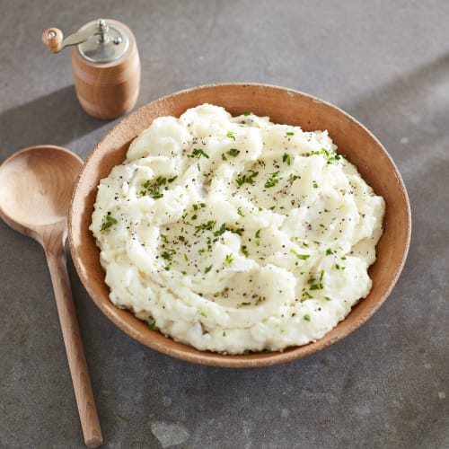

Mashed Potatoes

8gold or russet potatoes (about 4 pounds total), scrubbed½ cupmilk- Kosher salt
½ pound (2 sticks)salted and unsalted (50/50) butter1 tspfreshly ground black pepper
Peel the potatoes, leaving a little skin on each one for texture, if desired (I like to leave about 5 stripes of skin on each potato). Cut the potatoes into 1 ½-inch chunks.
Bring a large pot of generously salted water to a rolling boil. Add the potatoes and simmer until they are very soft, 15 to 20 minutes. Drain thoroughly and return the potatoes to the pot.
Meanwhile, in a medium saucepan, heat the butter and milk over medium-low heat just until the butter is melted and the milk is warm. Stir in 1 teaspoon salt and the pepper.
Mash the potatoes using a potato masher, adding the milk/butter mixture in about four parts, mashing as you go, until the potatoes are creamy and well blended but still have a bit of texture.
Optional: add some Crème Fraîche, Parmesan cheese, chives or parsley for extra flavor.
Store leftovers in a covered container in the refrigerator for up to 3 days.